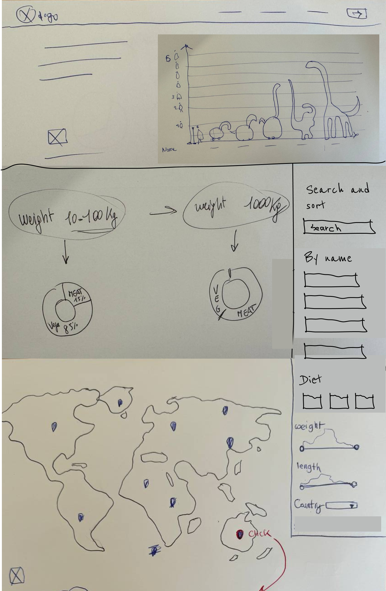

A dataset this large is easy to make overwhelming.
The brief was to turn a National History Museum dataset — hundreds of dinosaurs, their diet, habitat, taxonomy, and discovery history — into a single-page web app people would actually want to explore. The hard part wasn't the content, it was the volume: presenting that much information in a way that stayed informative and entertaining, stayed responsive across devices, and didn't fall over under its own data.
I reviewed the two obvious references — National Geographic Kids and Dinosaur Database — to see how they handled the same kind of content. Both leaned heavily into a children's audience: bright, saturated colors and animated dinosaur illustrations.
That didn't match what we had to work with. Our dataset came with its own illustrations, and they were far more serious in tone — detailed, black-and-white, closer to a museum plate than a cartoon. Rather than force the dataset into a kids'-app look, I designed for both audiences at once: keeping the serious illustrations, and pairing them with a bright, pastel palette that kept the app approachable without undercutting the material.
Six weeks. One MoSCoW board.
With six weeks on the clock, the team moved straight into gathering and prioritizing requirements using MoSCoW — there wasn't room to explore every possible feature, only the ones that mattered most.

Must have: search component, diet chart, dinosaur display, interactive dinosaur gallery, accessibility features, location map, type chart.
Should have: dinosaur details view, advanced search filters, a responsive experience across devices.
Could have: community forums, news about recent dinosaur discoveries.
Won't have (this round): comprehensive educational modules, social sharing integration, gamification elements like badges and leaderboards.
That prioritization set the shape of six sprints: kickoff and a shared vision statement, then defining MVP priority features; setting up the backlog, low-fidelity wireframes, and the team's GitHub workflow; three sprints of design, development, and testing before deploying to production; and a final sprint to close out the project and fix last-minute bugs.
Every design decision after this point had to serve the Must-have list first — the tone decision from the audit became the throughline that let a search bar, a world map, a taxonomy tree, and a news feed all read as one coherent product instead of five bolted-together features.
I sketched low-fidelity wireframes and user stories early, before any visual design, to pin down the core flows — searching or filtering by name, country, weight, diet, and length; browsing dinosaurs by location on a world map; and drilling into a single dinosaur's full detail view. Getting this structure agreed with the team first meant the later visual and technical work had a stable shape to build against.

To move quickly against the deadline, I used Google Looker Studio to rapidly prototype how the dataset's diet and type breakdowns could be visualized. It let me show the team a working version of the charts almost immediately, which kick-started the rest of the interactive dashboard.
I ran two rounds of usability testing with five potential users, refining the design between rounds based on their feedback. It's worth being upfront that this was lighter-touch than later projects: no formal metrics were tracked, and the sessions were used mainly to catch confusing flows and adjust layout and hierarchy before locking the high-fidelity design.
Simplify until it's legible.
1. Taxonomy visualization
The taxonomy data was more complex than expected — rendered in full, it produced a very deep evolutionary tree that would have overwhelmed rather than informed the user. Instead of showing the whole tree for every dinosaur, I simplified the visualization to highlight only the branches relevant to the dinosaur currently selected.

2. Map visualization
The dataset only recorded country-level location data. A literal pin per dinosaur would have piled multiple dinosaurs on top of each other in the same country, making individual dinosaurs impossible to select. I used a choropleth map instead — highlighting the density of dinosaurs per country — paired with a scrolling carousel listing the dinosaurs themselves, a simple way to pick one without needing a precise pin to click.

Everything, on one scroll.
After two rounds of usability testing and iterative refinement of the main issues, I moved to the high-fidelity design and the team built and shipped it.
Dino Studio shipped as a single-page, all-in-one learning tool for dinosaur enthusiasts of any age — search, map, taxonomy, and detail views, plus a news feed, all reachable by scrolling rather than navigating between pages. Interactive modules cover dinosaur history, evolution, habitat, and taxonomy without ever asking the user to leave the page they landed on.

Content freshness.
The site launched with a fixed dataset and a placeholder news feed. Keeping the app relevant over time would mean regularly adding new content — blog posts, educational articles, quizzes — rather than treating launch as the finish line.
No personalization.
Every visitor sees the same experience regardless of what they've searched or viewed before. Tailoring content and features to a visitor's interactions and preferences remains an open direction the six-week timeline didn't allow for.
Dino Studio proves that a genuinely large, serious dataset doesn't have to be traded off against being approachable.
The hardest part was never the content itself — it was presenting a vast amount of information on a single page without overwhelming the user, and building interactive visualizations, like the map and the charts, that stayed easy to interpret as the data got denser. Solving that taught me how to visualize complex data and design a dashboard that presents many things at once, and how to adapt quickly when a first solution — a full taxonomy tree, a pin-per-dinosaur map — didn't hold up against how complex the data actually was.